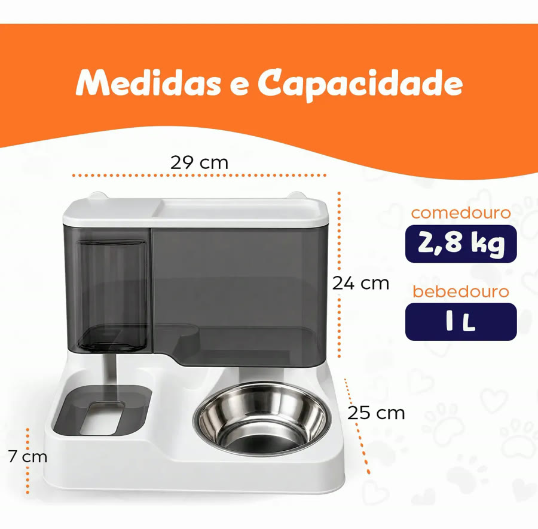
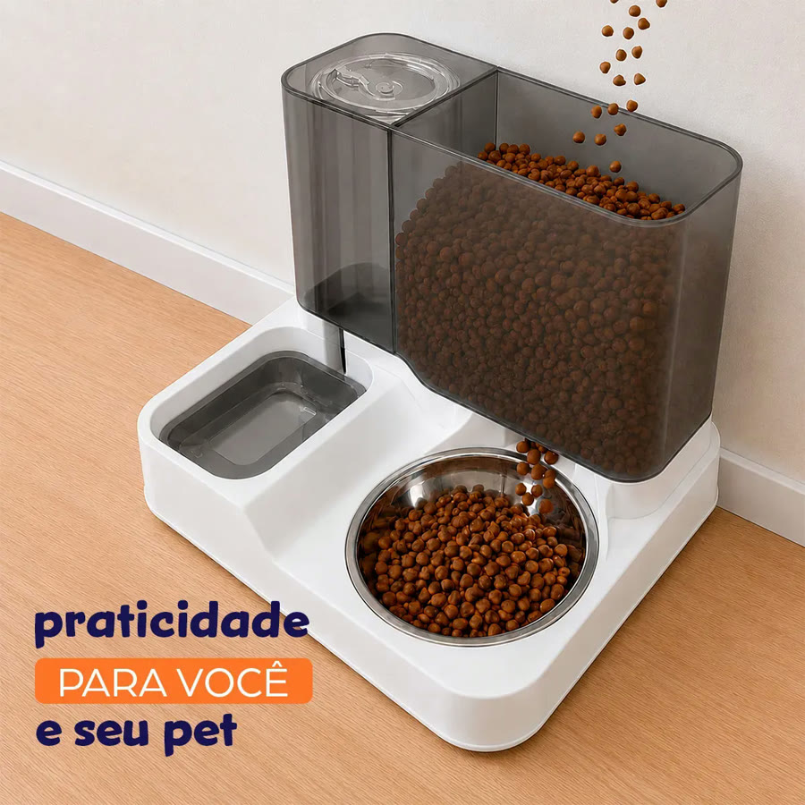
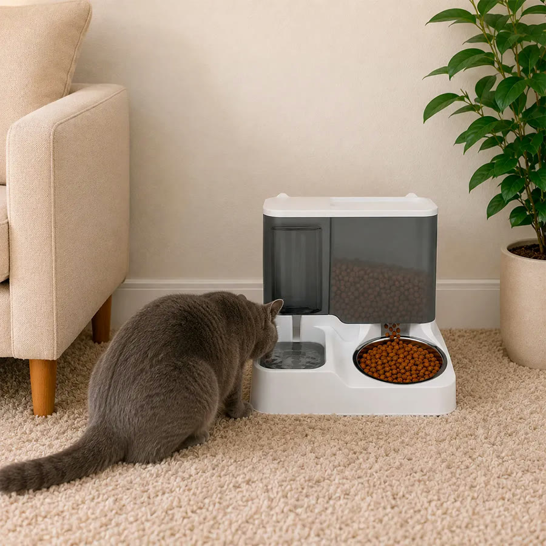
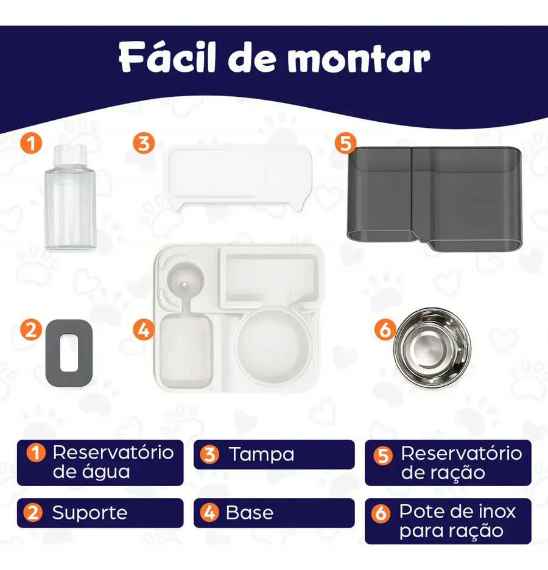
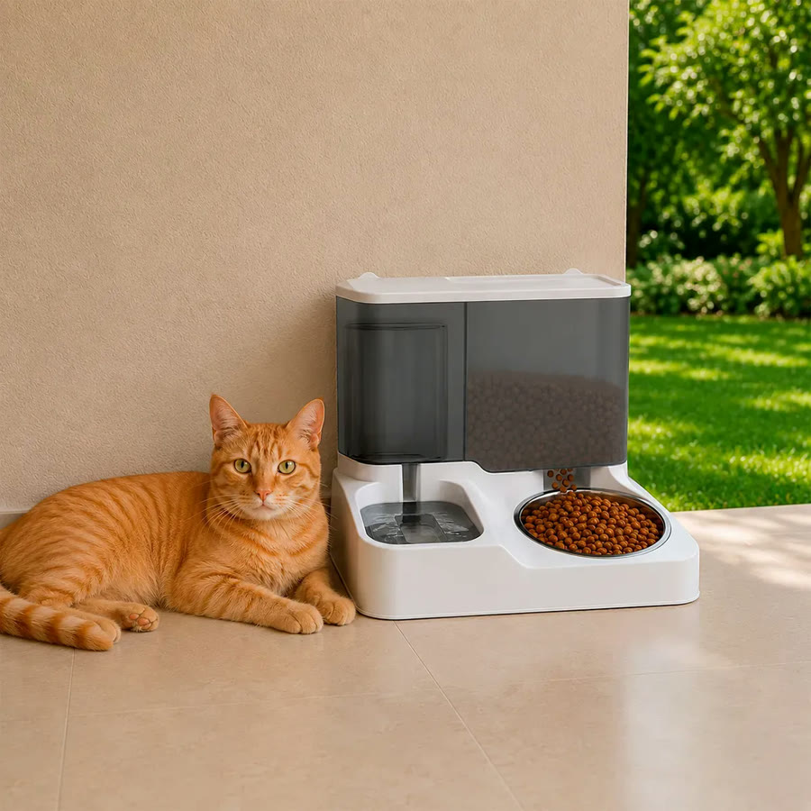
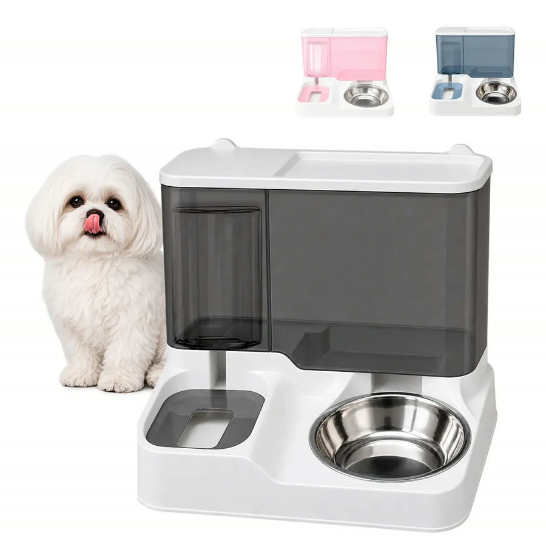

Achado nº 101
Encher o potinho de ração toda hora?
Bebedouro e comedouro por gravidade para cães e gatos
★ 4,8 · mais de 500 avaliações no Mercado Livre






O que diz a página oficial do produto
- É uma base com bebedouro e comedouro juntos, cada um com seu reservatório em cima
- Funciona por gravidade: conforme o pet come e bebe, a ração e a água descem do reservatório
- Não é elétrico: não usa tomada, pilha nem bateria
- Segundo o anúncio, o comedouro comporta 2,8 kg de ração e o bebedouro 1 litro de água
- A ração cai num pote de inox, que vem junto
- Segundo o anúncio, a tampa sai para reabastecer e limpar
- Mede cerca de 29,5 x 25,5 x 24 cm
- No Mercado Livre, tem nota 4,8 com mais de 500 avaliações
Link de afiliado: se você comprar por ele, a Achadaria pode receber uma comissão, sem custo extra para você. Preço, estoque e entrega são da loja e podem mudar; confira lá antes de comprar.